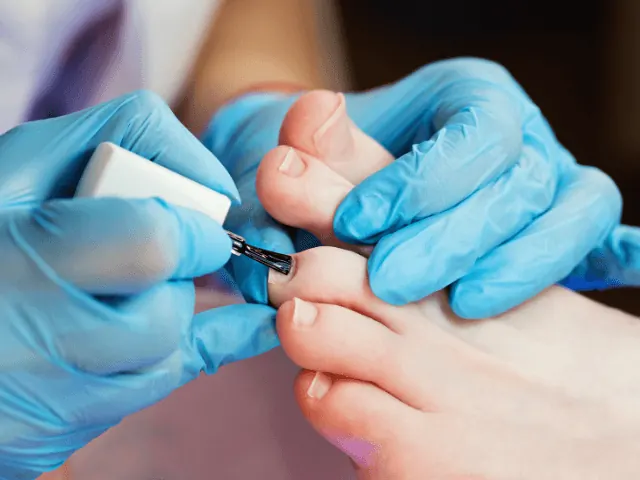

Een verwenmoment voor je voeten: Luxe pedicurebehandelingen in Nijmegen
Gepubliceerd op 18 augustus 2023, bijgewerkt op 26 februari 2024
Onderdeel van de gids Pedicure in Nijmegen

Welkom, voetverzorgingsliefhebbers, in het prachtige Nijmegen! Ben je op zoek naar een ultiem verwenmoment voor je vermoeide voeten? In deze blog laten we je kennismaken met de wereld van de luxe pedicurebehandelingen die Nijmegen te bieden heeft. Dus ga er maar eens lekker voor zitten, terwijl we je meenemen op reis door Nijmegen vol verwennerij voor je voeten.

Stap binnen in het paradijs van voet verwennerij
Ontspan en geniet van een heerlijk voetbad gevuld met geurende oliën en bubbels. Laat je voeten verwennen terwijl de stress van de dag langzaam verdwijnt. Geniet van de sensatie van scrubs die je voeten weer zijdezacht maken. Dit is het moment om je voeten te laten genieten van pure verwennerij.
Een koninklijke behandeling voor je voeten
Ervaar de ontspanning en verlichting tijdens een koninklijke voetmassage. Laat de vakkundige handen van de professional de spanning in je voeten weg kneden. Voel je de koning te rijk, terwijl je voeten tot rust komen. Vervolgens krijgen je voeten een voedend voetmasker om ze te revitaliseren en te hydrateren. Je voeten verdienen tenslotte de beste behandeling.

Pedicurebehandelingen: Een feest voor je voeten
Geef je voeten een artistieke uitstraling met prachtige nagelkunst. Laat je creativiteit de vrije loop en kies uit een breed scala aan kleuren, patronen en decoraties. Je kunt je voeten transformeren tot ware kunstwerken. Sluit de behandeling af met een glanzende nagellak die je voeten laat stralen. Kies een kleur die past bij je stijl en maak je voeten het middelpunt van de aandacht.
Laat jezelf verwennen in Nijmegen: Kies voor een van onze tips
Uw voet mijn zorg
Bij Uw voet mijn zorg, kun je rekenen op een professionele en persoonlijke benadering van je voetverzorging. Ze bieden een breed scala aan behandelingen, van basispedicure tot gespecialiseerde zorg. Klanten prijzen de deskundigheid en vriendelijkheid van het team, en voelen zich op hun gemak tijdens de behandelingen. Je kunt een zorgvuldige en grondige aanpak verwachten, waarbij je voeten centraal staan.

Feetwelness voetverzorging
Feetwelness voetverzorging is gericht op het bieden van een ontspannende en verkwikkende ervaring voor je voeten. Naast reguliere pedicurebehandelingen bieden ze ook wellnessbehandelingen zoals voetmassages en voetmaskers. Klanten waarderen de serene sfeer en het gevoel van totale ontspanning tijdens hun bezoek. Bij Feetwelness kun je een moment van pure verwennerij verwachten, waarbij je voeten helemaal tot rust kunnen komen.
By Millycent Medisch pedicure
By Millycent Medisch pedicure staat bekend om hun professionele aanpak en expertise op het gebied van medische voetverzorging. Ze bieden gespecialiseerde behandelingen voor verschillende voetproblemen, zoals ingegroeide nagels en eeltvorming. Klanten waarderen de nauwkeurigheid en zorgvuldigheid waarmee de behandelingen worden uitgevoerd. Bij By Millycent kun je rekenen op deskundig advies en effectieve oplossingen voor je voetproblemen.

Lory Pedicure
Lory Pedicure staat bekend om hun vriendelijke en toegankelijke benadering van voetverzorging. Ze bieden een breed scala aan behandelingen, van standaard pedicure tot voetreflexologie. Klanten waarderen de persoonlijke aandacht die ze krijgen en voelen zich direct op hun gemak bij Lory Pedicure. Bij hen kun je een warm welkom en een professionele, maar ontspannen sfeer verwachten, waarbij je voeten in goede handen zijn.
Conclusie
Dit was een voorproefje van de luxe pedicurebehandelingen die je kunt ervaren in Nijmegen. Stap binnen in het paradijs van voetverwennerij, geef je voeten de aandacht die ze verdienen en laat ze stralen als nooit tevoren. Het is tijd om jezelf te verwennen met een verwenmoment voor je voeten. Dus waar wacht je nog op? Ontdek de wereld van luxe pedicurebehandelingen en geef je voeten het verwenmoment waar ze naar verlangen.